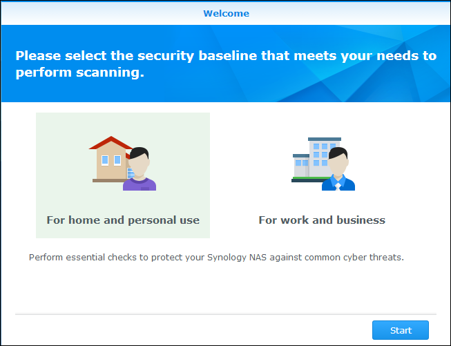

Vue d’ensemble
DSM a une nouvelle fonctionnalité appelée le Conseiller en sécurité qui aide à garder votre NAS Synology sûr. Le Conseiller en sécurité analyse la configuration globale de votre NAS Synology et fournit des rapports détaillés sur son état de sécurité. En outre, le Conseiller en sécurité vous montrera comment gérer les risques de sécurité identifiés. Ouvrez le Conseiller en sécurité et apprenez à :
- Exécuter une analyse de la sécurité
- Afficher les rapports de règles de sécurité
- Gérer les risques de sécurité
1. Exécuter une analyse de la sécurité
- La première fois que vous ouvrez le Conseiller en sécurité, il vous sera demandé pour quoi vous utilisez votre NAS Synology. Choisissez Maison ou Travail selon votre situation et cliquez sur OK. Vous pouvez toujours changer ce paramètre ultérieurement dans la page Avancé. 
- Le Conseiller en sécurité commencera à analyser la configuration de votre NAS Synology. Vous pouvez afficher l'état général de la sécurité, la progression de l'analyse, et le résumé des résultats dans la page Vue d'ensemble.
- Une fois l'analyse terminée, les résultats pour chaque catégorie de règles de sécurité sont affichés. Le Conseiller en sécurité fournira un état global pour chaque catégorie et résumera les découvertes des risques de sécurité.


2. Afficher les rapports de règles de sécurité
- Cliquez sur Afficher les résultats sur la page Vue d'ensemble. Vous pouvez afficher des informations détaillées de l'analyse terminée, rapport par rapport.
- Double-cliquez sur une règle de sécurité pour ouvrir un rapport détaillé. Chaque rapport peut contenir des informations sur la Gravité, la Description, les Détails et l'Action recommandée pour chaque règle de sécurité.


3. Gérer les risques de sécurité
Voici un exemple d'une règle de sécurité échouée et les détails sur comment la gérer.
- Le Conseiller en sécurité identifiera les risques potentiels pour la sécurité de toute règle de sécurité échouée. Ici, le Conseiller en sécurité détecte que "Blocage auto est désactivé".
- Ouvrez une règle de sécurité échouée pour afficher des informations détaillées. Sous Action recommandée, le Conseiller en sécurité fournit des conseils sur comment gérer ce risque de sécurité.
- Cliquez sur Ouvrir pour accéder directement à la page des paramètres correspondants et suivre l'Action recommandée.
- Dans la page des Résultats, analysez à nouveau la règle de sécurité échouée en sélectionnant la règle et en cliquant sur Analyser.
- Aucun risque de sécurité n'est détecté pour cette règle de sécurité. Le Conseiller en sécurité continuera à vous aider à identifier les risques potentiels de sécurité et à recommander des mesures pour gérer ces risques. Gardez votre NAS Synology sûr en effectuant régulièrement des analyses dans le Conseiller en sécurité !